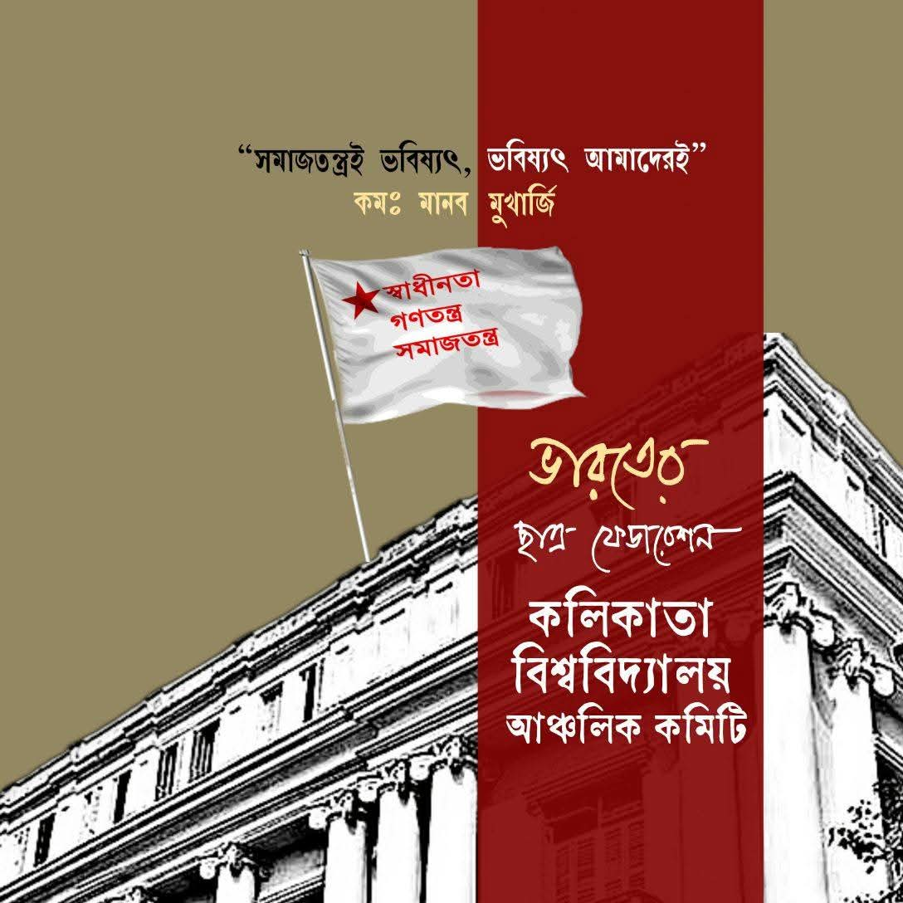

SFI remains one of the prominent political student organizations at Calcutta University. Our actions generally focus on rights, resources, representation and democratic participation — at least in official rhetoric and demands. SFI Calcutta University advocates independent student representation and progressive student demands as part of a larger goal to transform education and society.
Our involvement at Calcutta University mirrors this pattern: mobilisation on specific issues — from academic provisions to political rights — while aligning with a broader political ideology. SFI Calcutta University's involvement is not limited to campus administration issues. We have also participated in broader political (national or regional) campaigns and events — for example, screening controversial documentaries or confronting rival student organisations.
From assisting students during the admission process of Calcutta University through helpdesks to standing beside students in various difficulties, SFI Calcutta University has consistently played an active role.
Recently, from movements demanding the activation of the Placement Cell to protests calling for the locking of illegal union rooms; from agitations for reopening the canteen to movements demanding free medical treatment for Calcutta University students at the Student Health Home — SFI Calcutta University claims to have secured these demands.
At the same time, SFI has raised its voice on issues concerning female students’ safety, the installation of sanitary napkin vending machines, and the demand for period leave for female students. SFI Calcutta University has also fought at different times on various hostel-related issues.
Despite the absence of an elected student union within Calcutta University, SFI Calcutta University has created a space for alternative student culture on campus.
Through organising the annual bookstall titled “Sangrami Boipatra”, hosting various competitions, publishing articles, journals and magazines, and arranging different tournaments, SFI Calcutta University has performed the role of an alternative union before the students of Calcutta University.
In the struggle to defend the autonomy of Calcutta University and in the fight to restore democracy on campus, the role of SFI is undeniable. Our primary goal is Students' Union Election. Holding on to the dream of Com. Sudipto Gupta, SFI comrades continue to fight relentlessly on campus every single day.
